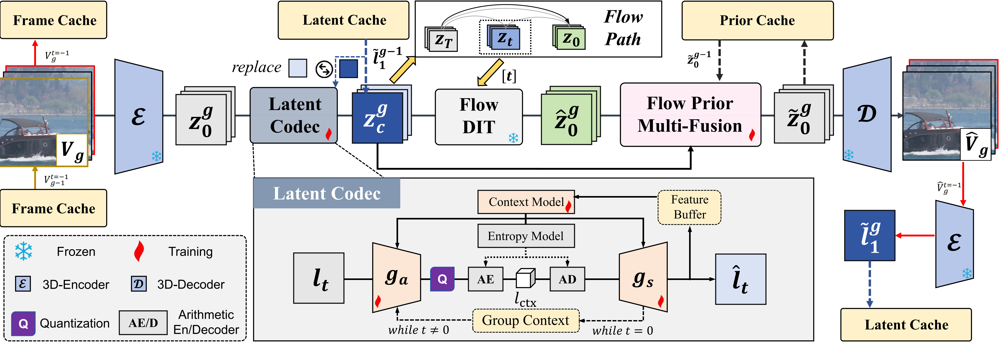
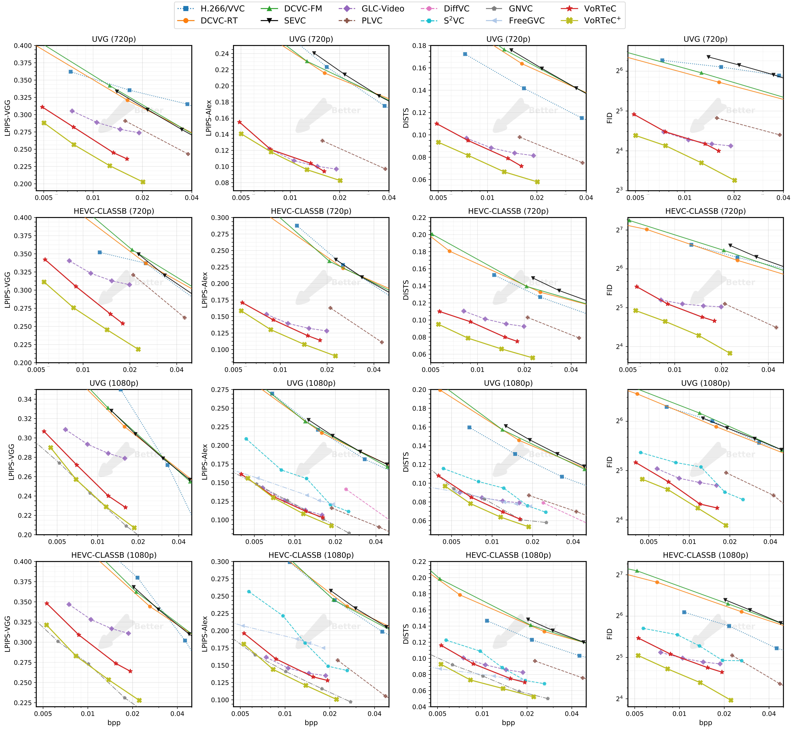
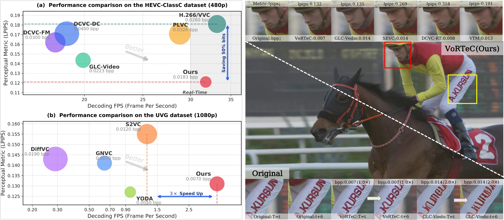
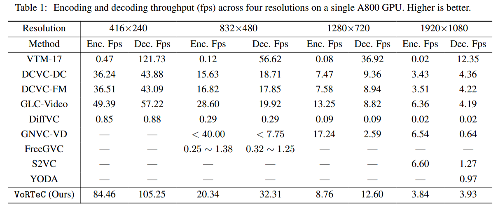

Ours ($1.00 \times$）vs. H.264 ($1.25\times$）
Ours ($1.00 \times$）vs. H.264 ($1.76\times$）
Ours (0.005bpp, CR=4,800)
Ours (0.008bpp, CR=3000)
Ultra-low bitrate video compression still faces critical challenges: traditional neural video compression inevitably introduces blurring artifacts, while diffusion-based generative video compression suffers from excessive decoding latency and poor temporal consistency. To address these issues, we propose $\mathtt{VoRTeC}$, a Video Compression framework built upon a foundational flow model (Wan2.1). By compactly encoding latent video representations, predicting the positions of compressed representations along flow trajectories, and integrating multi-scale priors, $\mathtt{VoRTeC}$ enables the compressor to harness generative video flow priors effectively. Without accessing the parameters or gradients of flow matching networks, our framework achieves one-step decoding and reconstructions with high perceptual fidelity. Meanwhile, we maintain consistency across frame groups via tail-frame reuse and prior caching. Extensive experiments demonstrate that our method reduces bit consumption by 58\% compared to prior diffusion-based approaches, with decoding speed boosted by 3 to 197 times: $\mathtt{VoRTeC}$ achieves a decoding speed of 13 FPS at 720p and 32 FPS at 480p.
$\mathtt{VoRTeC}$, a Real Time Video Compression framework built upon a \textbf{o}ne-step foundational Flow model. $\mathtt{VoRTeC}$ compresses spatiotemporal latents into compact transmittable representations, and treats the decoding result as a temporal state along the flow path. This enables us to perform enhanced decoding even without access to the parameters or gradients of the foundation flow-matching network. Then, through a ViT-based prior fusion network, $\mathtt{VoRTeC}$ fuses and aligns the coarse-grained compressed representation with the fine-grained prior representation, ultimately achieving fast single-step decoding. Furthermore, we design an inter-group communication technique (CGG), which allows spatiotemporal information from preceding video groups to flow into subsequent groups. This ensures inter-group consistency and further reduces the bitrate without incurring additional training or decoding overhead.


VoRTeC consistently outperforms prior neural, generative, and traditional video codecs on HEVC ClassB (720P / 1080P) and UVG (720P / 1080P). With LoRA fine-tuning, VoRTeC⁺ further extends the gains to 64.53%–74.80% LPIPS BD-Rate savings.

Left: Comparison of rate-perception performance and decoding efficiency. $\mathtt{VoRTeC}$ (Ours) delivers a better rate–perception trade-off than prior diffusion-based video codecs and enables real-time decoding, running up to $3\times$ faster than existing diffusion-based methods. Right: Qualitative comparison between baseline and our proposed approach. $\mathtt{VoRTeC}$ (Ours) is capable of reconstructing complex textures with realism, even at extremely low bit rates.

@misc{yourname2026yourtitle,
title={Your Title: A Method Description for Video Compression},
author={Author 1 and Author 2 and Author 3 and Author 4},
year={2026},
eprint={XXXX.XXXXX},
archivePrefix={arXiv},
primaryClass={eess.IV},
url={https://arxiv.org/abs/XXXX.XXXXX},
}